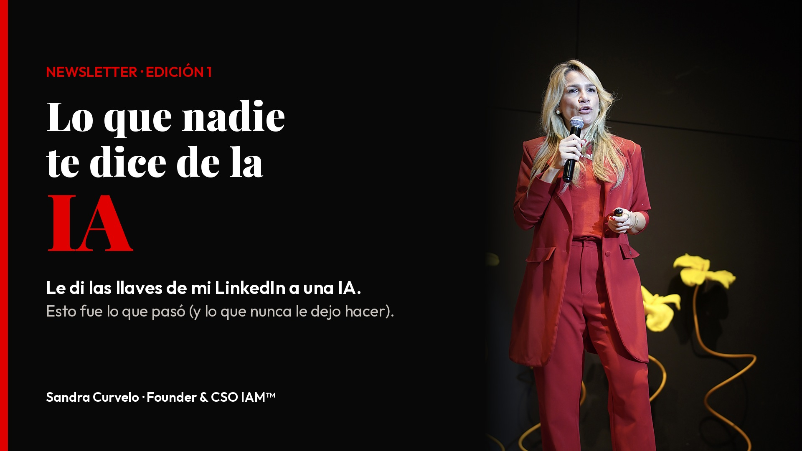
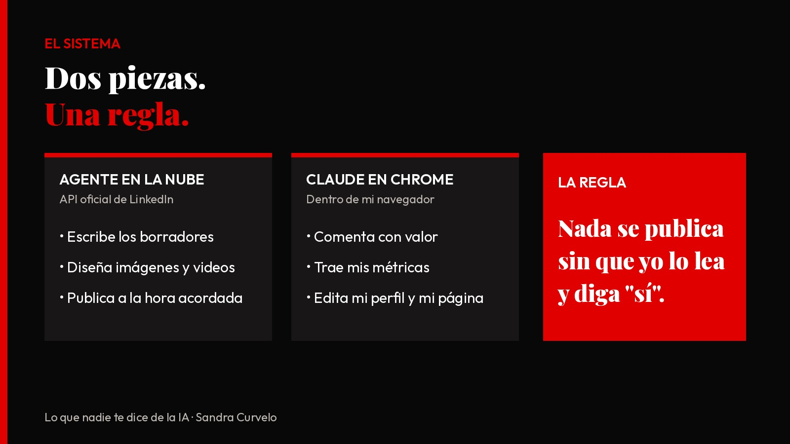
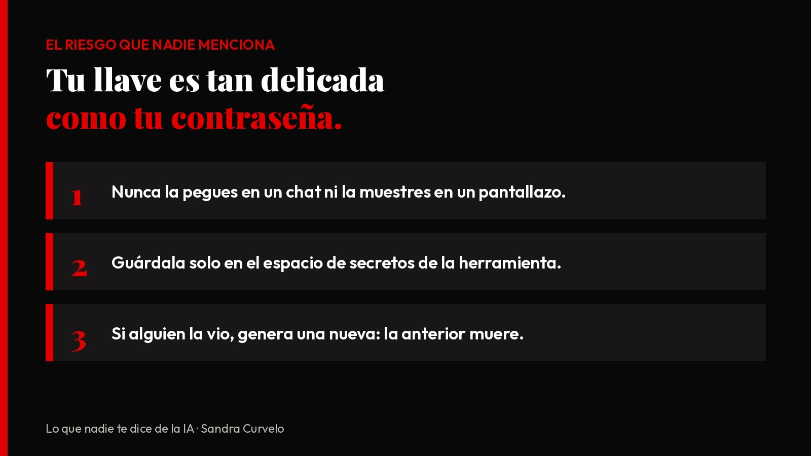
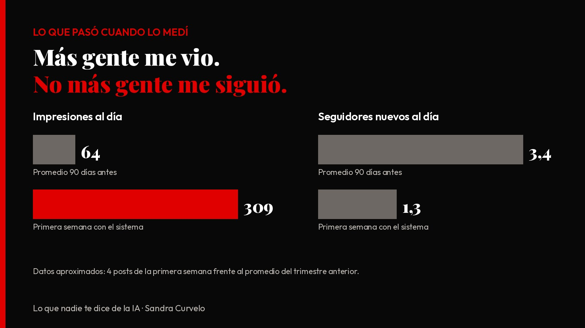

Lo que nadie te dice de la IA
Le di las llaves de mi LinkedIn a una IA. Esto es lo que nadie te dice (y lo que nunca le dejo hacer)
Sandra Curvelo · Founder & CSO, IAM™
Antes de empezar, un cambio. Esta newsletter se llamaba "IA + Ventas = Éxito Garantizado". Hoy se llama "Lo que nadie te dice de la IA".
¿Por qué? Porque yo cambié. Ya no hablo solo de ventas: hablo de IA que funciona en toda la empresa. Y aprendí algo: en IA nada está garantizado… salvo lo que se mide.
Ahora sí.
Hace dos semanas hice algo que muchos me dijeron que era una locura:
Conecté mi LinkedIn a un agente de inteligencia artificial.
Hoy ese agente:
⭕ Escribe mis borradores
⭕ Diseña mis imágenes y edita mis videos
⭕ Revisa mis fotos para que no aparezca el nombre de ningún cliente
⭕ Publica a la hora acordada
Pero hay una regla que no se negocia:
Nada sale sin que yo lo lea y diga "sí".

1. Lo que nadie te dice: conectar LinkedIn con la IA no es un clic
Todos los videos muestran el resultado. Ninguno muestra el camino.
La capacidad clave: LinkedIn tiene una puerta oficial para que una aplicación publique en tu nombre. Se llama API. Para abrirla:
→ Creé una aplicación en el portal de desarrolladores de LinkedIn
→ La asocié a la página de mi empresa
→ Activé el permiso para compartir publicaciones
→ Generé una llave de acceso
Luego le di esa llave a Claude, que trabaja como agente en la nube. Guardada en un espacio seguro, nunca en el chat.
¿Fue técnico? Un poco. ¿Lo hice yo? Sí. Paso a paso, con la IA explicándome cada pantalla.
2. Lo que nadie te dice: hay cosas que la IA no puede hacer por la puerta oficial
Por la API mi agente publica texto, foto, video y hasta encuestas. Pero LinkedIn no le deja comentar, dar "me gusta" ni leer mis métricas.
La capacidad clave: para eso uso otra pieza, Claude en Chrome, una extensión que trabaja dentro de mi navegador. Cada mañana:
⭕ Revisa mis publicaciones
⭕ Me propone 10 comentarios de valor en posts de líderes de mi sector
⭕ Me trae las métricas en una tabla
Y otra vez: no publica ni un comentario sin mi aprobación.
Video: así funciona mi sistema (24 s)
Un agente en la nube y otro en el navegador. Cada uno hace lo que el otro no puede. Eso es un sistema de trabajo, no una herramienta.
3. Lo que nadie te dice: el riesgo más grande no es la IA, es tu llave
Esa llave de acceso es tan delicada como tu contraseña: quien la tenga puede publicar en tu nombre.

4. Lo que pasó cuando lo medí
En la primera semana con el sistema, mis publicaciones tuvieron casi 5 veces más impresiones al día que mi promedio de los 90 días anteriores.
Lo que no mejoró, y te lo digo con la misma honestidad: los seguidores nuevos. Más gente me vio, pero no más gente me siguió.

Dato aproximado: comparé mis 4 posts de esa semana con el promedio del trimestre.
Eso es lo que estamos ajustando ahora. Te lo cuento en una próxima edición.
Prompts para que empieces hoy, sin conectar nada
Cambia lo que está entre [corchetes] y pégalo en cualquier IA:
Para revisar tu perfil:
"Actúa como experto en LinkedIn y en marca profesional. Te pego mi titular, mi Acerca de y mis últimos 5 posts: [pega aquí]. Dime 3 cosas que le impiden a un [cargo de tu cliente ideal] de [tu sector] seguirme, y cómo las corrijo."
Para planear tu semana:
"Actúa como estratega de contenido en LinkedIn para [tu sector]. Proponme 4 posts para esta semana: 2 historias reales sobre [tu tema], 1 dato con fuente y 1 pregunta para [tu audiencia]. No inventes cifras."
Para comentar con valor:
"Te pego un post de [nombre del líder]: [pega aquí]. Redacta un comentario de 3 líneas que aporte un dato o una experiencia sobre [tu especialidad], sin vender y sin frases genéricas. Yo lo reviso antes de publicarlo."
En conclusión
La IA no es una herramienta. Es un sistema de trabajo.
La herramienta escribe. El sistema decide qué se escribe, quién lo aprueba y cómo se mide.
Y la regla de oro: la IA hace el trabajo pesado, pero la última palabra es tuya.
¿Quieres la guía paso a paso para conectar tu LinkedIn con un agente de IA, con la lista de seguridad incluida?
Escribe AGENTE en los comentarios y te la envío.
Si quieres seguir viendo lo que nadie te dice de la IA, sígueme a mí y a la página de IAM™. Cada 15 días, una verdad nueva.